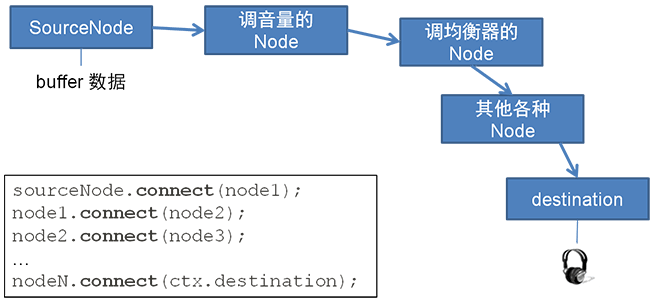

2-3. 总结
- 播放声音的基本步骤：
- 初始化
AudioContext对象 - 使用
XMLHTTPRequest对象从服务器获取mp3 - 把mp3数据用
ctx.decodeAudioData转换成wav格式的buffer - 使用
SourceNode对象（下文将详解这个对象）把buffer装起来 - 让
SourceNode连接到音频输出口destination - 执行
.start(0)触发SourceNode开始播放声音
- 初始化
- AudioNode 是 Web Audio Api 的基本类，由它派生的类可以处理音频。
- AudioNode 派生的类可以分为3种：
- 作为【声音源头】的 AudioNode，用于存储或生成声音。
- 作为【过滤器】的 AudioNode，会对输入（In）的声音进行处理之后再输出（Out）。
- 【destination】 是特殊的 AudioNode，它收到声音之后会直接传到耳机或扬声器，让我们最终听到声音。
- 多个 AudioNode 用
.connect()连接起来，可得到最终的声音。

接下来...
下一节《基本控制》，将对 SourceNode 做更多的控制，例如中途停止、循环播放、调节音量，并介绍如何实现多个 SourceNode 同时播放。
一个更好的选择
如果觉得 Web Audio API 写起来代码量太大，那么可以考虑使用我已经封装好的 Javascript 库 —— Benz Audio Engine。
项目 Github：https://github.com/BenzLeung/benz-audio-engine
Benz Audio Engine 只把 Web Audio API 常用功能做个简单的封装，实现音效的加载、播放、暂停、音量调节。简单、干净，没有多余的功能。
参考文献
- Web Audio API 简易入门教程，http://newhtml.net/web-audio-api%E7%AE%80%E6%98%93%E5%85%A5%E9%97%A8%E6%95%99%E7%A8%8B/
- W3C Editor’s Draft，https://dvcs.w3.org/hg/audio/raw-file/tip/webaudio/specification.html